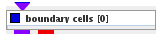
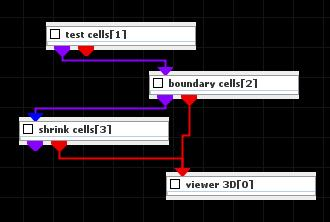
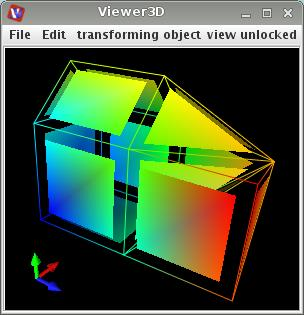

|
|
|

triangulates the input field
| input port | type | description | data acceptors |
|---|---|---|---|
| inField | VNIrregularField | Irregular Field 3-space |
|
| output port | type | description | data schemas |
| outField | VNIrregularField | Irregular Field 3-space |
|
| outObj | VNGeometryObject |
BOUNDARY CELLS
The module triangulates the boundary of an irregular input field.
Input data
The input field is irregular 3-space.
Output data
The output field is irregular 3-space. A 3D geometry object of the field.
Presentation parameters
Presentation tab contents are described in the common interfaces section unter the Presentation Panel entry.
Example

Choose test cells module from test objects library, boundary cells module from geometry filters library and shrink cells module from general mappers and accessories library and connect them.
In boundary cells module’s GUI choose lines instead of surface presentation.
